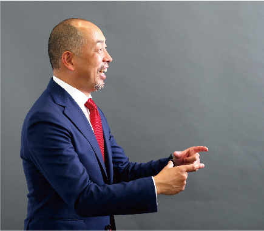

―― 田内さんはライフプランナー（以降LP）として大変長いキャリアと実績をお持ちですが、保全に対する具体的な取り組み方は当初の時と、キャリアと共に経過した時と変化した部分はありますか？
また、基本的に変わっていないものがあれば教えてください。
田内：先ず、変化した事についてお話ししますと、私は2002年12月に入社して、社長杯に7回入って8回目に初めて落としてしまいました。それが直接のきっかけだったと言えるかもしれません。その時の営業成績が今までで一番悪かったのですけど、それまでははっきり言って「売りたい気持ち」ばかりでした。なのでお客様のところに保全を兼ねて行くとなっても、やっぱり鞄の中には設計書が入っていて、出す、出さないは別にしても心の中では「売りたい」という気持ちがものすごく強かったと思います。しかし、2009年度に社長杯を落としてから、売ることを止めました。言いかえると積極的な営業活動を控えてしまったのです。すると、逆にお客様から「これはどうしたらいいですか？」という質問が増えてきたりして、入社して8～9年目ぐらいから「とにかく売りたい」から、「役に立ちたい」という気持ちが大きくなってきました。その時から「お客様の心の声にちゃんと応えたいな」という気持ちで、敢えて(お客様に)嫌がられるような質問もするようになったし、判らない事をそのまま放ったらかしにする事もしない、本当にお客様が不安に思っている事、心配に思っている事に応えたいなという気持ちで、ちゃんと関わるようになったら営業成績も伸びて、気付けば紹介も広がっていました。
具体的にどんな事をしたかというと、先程お話ししたお誕生日ごとのお電話や、エアメールなどはじめていきました。まずはお電話で、「少しお話を聞きに行きましょうか？」みたいな感じでお声がけし、お客様の所へ「手ぶらで行く」感覚でお話を聞く。具体的な質問が出てくれば「次にもう一度お会いしましょうか？」みたいな感じで次に進む。基本的にはお会いして程よい「距離感を保つ」事が大切で、売る事は二の次みたいな関わり方ですね。そんな風に活動が変わってきたと思います。
キャリアの短いLPがよく失敗してしまう事例かも知れませんが、「保険は売れるけど、距離感が離れる」みたいな話があります。例えば、結婚した時に保険に入ってもらいました。その後、そのご夫婦に子どもさんが産まれたら最初に「保障を増やさないといけませんね」と、恐らくこちらは当たり前のようにお話すると思います。しかし、お客様の方は子どもが増えたイコール、「この子たちの教育資金は将来どの位必要なのかな？」とか、「行く学校によって幾ら位変わるのかな？」という事に興味があるわけです。にもかかわらず、いきなり (既契約者の方に) 「死んでしまったらどうするのですか？」とか言ってしまう。例えば、起業された方でもそうですし、結婚したとか子どもが産まれたという人もそうですが、LPとしては、まず寄り添って「楽しみが増えますね」とか、「リスクもあるけど、大きなチャレンジで楽しみですね」とか、そんな話が出来ると思います。しかし、お客様に寄り添うことを忘れて「そんな事であれば直ぐに保障を増やさないといけない」と言ってしまう。もちろん、それはそれで正しいのですが、距離感を保つというのは「死んだらどうします？」という事よりも、「将来楽しみですね、その夢を一緒に考えていくのはワクワクしますね。」と寄り添った上で、「家族とのそんな時間が大事で、そうした守りたい大切なものがあってこその保険だと思います。
でも、こんな時になんですが、保険も見直しておかれては如何でしょうか？」と、お話しするとお客様はおおよそお判りいただけると思います。そのような姿勢が次の紹介につながると思うし、それこそが保全だと思うのです。「保障を増やさないといけない」の一辺倒になるとお客様との距離が離れてしまうのではないかと思います。要は、売りに行かない。お客様が個人であろうと会社であろうと、お客様のサポーターとして近くにいる。LPはその名のごとく、人生プランの計画者として傍らにいる、ということが大切ではないかと思います。
―― 十人十色であられるお客様は田内さんにどのような事を期待されていらっしゃると思われますか？
田内：そうですね、個人の方は「必要な時には来て。そうじゃない時はそんなにしょっちゅう来られても困るよ」と、そんな風に思っているのかなと僕は勝手に想像しています。お客様には、それぞれちょうどよい距離感があると思います。「暇だし、話し相手に来てよ」と思う方もおられるし、「たまには面白い話聞かせてよ」と思っている方もおられます。一律ではなくいろいろだと思います。特に個人の方にはお申込の際に「私はしょっちゅう来る事はありません。でも、もしも非常事態のボタンを押してくれたら直ぐに伺います」と必ずお伝えします。本当に必要な時は直ぐに行きますという事です。それと、「将来、もしこんな事があったら連絡をくださいね」というお話はします。バースデーコールについても、ご契約の時にお話していて、「年に一度必ずお電話します」と。これも途中から言い始めた感じですね。最初の頃はそうでもなかったのですが、今はお申込の時に、今後のお付き合いの仕方でお伝えするようにしています。個人のお客様も、経営者でいらっしゃるお客様も同様です。
また、オーナー経営者の方には「法人の決算時期や新年度の4月とか、そういったタイミングでは訪問させてもらう事もあると思うので、ご連絡を差し上げます」とお伝えします。一方、例えば現在みたいに世情が混乱している時には、「ご様子を伺うため、お電話をする事もあるかも知れません」とお伝えしています。経営者の方とは普段どんなお付き合いをしているかというと、私はゴルフもお酒も行きません。基本お酒の付き合いはゼロです。お酒もせず、ゴルフもせず、普通の日々のお付き合いの中だけですが、それでも保全活動として次につながっていると思います。一番の保全は、一番初めの在り方。ご契約に至るまでのプロセスです。保険の内容と共に保険以外のいわば周辺の事がとても大切だと思っています。私の場合、保険の契約になる時は、必ず法人の決算書を見せていただいたり、これまでの経過を伺ったり、役員/社員退職金、社員さんの人事制度について質問させてもらったり、一見すると保険とは余り関係のない話をたくさんしてもらいます。そのお話の中で、なんとなく「こいつはちょっと違うな。出来る奴だな」と思ってもらえるように常々勉強をしているつもりです。やはりお客様から、「こいつは優秀な奴だな。役に立つな」と思ってもらえるようでなければと思っています。実際に「困った時には、まず田内に電話！」と思ってくれている経営者の方もおられます。本業の経営判断はもちろんご自身でされますが、例えば、「頑張っている社員を取締役に入れていいかどうか？」という相談をされる経営者の方もおられますし、「役員の給料をどれ位にするか」という事を相談してくださる経営者の方もおられます。単に保険屋さんという括りではなく、税理士でもなく、社労士でもなく、「ライフプランナー」として経営者の方のお役に立ちたいと思っています。POJ創業者の坂口さんが日本に根付かせたかった「ライフプランナー」という新しい職業。その私なりのLP像を考えると、自分が一番パフォーマンスを発揮出来るのは、経営者の方の近くだと思っているので、「歯に衣着せずに嫌なことも言ってくれるし、厳しい質問をちゃんとしてくれる人」という風に思ってもらえるような存在でありたいですね。
「私と、保全活動」 バックナンバー
2019年


2020年


2021年


※職位、略歴は取材時の情報です